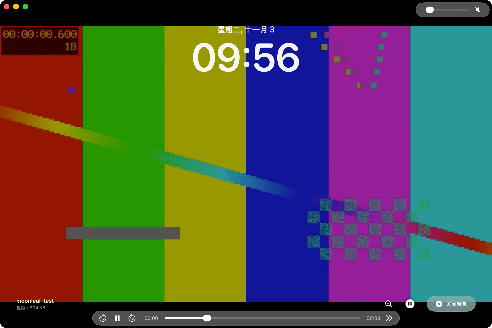
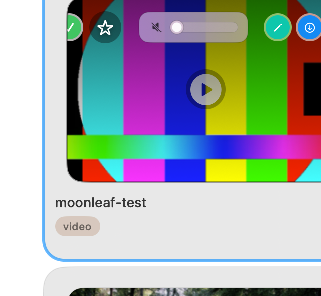

How to Set a Video as Your Wallpaper on Mac (Free)
Quick Answer
Can you set a video as your wallpaper on a Mac? Not from System Settings — macOS only offers Apple's own curated Aerial flyovers and dynamic landscapes. A wallpaper utility can play your own video files on the desktop instead. Moonleaf is a free, open-source app that plays MP4 and MOV videos (and animated GIFs) as your desktop wallpaper, supporting independent assignments on each monitor and virtual Space.
Is there a free live wallpaper app for Mac that works on Intel? Yes. Moonleaf is MIT-licensed with no subscription fees or watermarks. Built as a Universal binary for macOS 12 Monterey through macOS 26 Tahoe, it runs smoothly on both Intel and Apple Silicon Macs.
Disclosure: Moonleaf is our open-source application. This guide outlines how to use it alongside honest comparisons with commercial and system-level alternatives.What macOS Can Do on Its Own
Starting with macOS Sonoma and continuing through macOS Sequoia and Tahoe, Apple introduced slow-motion video wallpapers. When you browse System Settings → Wallpaper, you can select drone footage of Greenland, the Hawaiian coast, or Dubai's skyline that animates smoothly across your desktop and slows to a stop on login.
However, as documented in Apple's official desktop picture guide, this feature is closed to third-party content. You cannot click an "Add Video" button in System Settings to pick a personal 4K drone clip, an MP4 loop from Pexels, or a captured game highlight. If you select your own video file via Finder, macOS simply rejects it or sets nothing.
To run your own MP4 or MOV clips as live desktop backgrounds, you need an application designed to render hardware-accelerated video frames directly onto the desktop layer.
Set a Video as Wallpaper with Moonleaf (Free)
Moonleaf is a native macOS application engineered in pure Swift and AppKit. It uses Apple's native AVFoundation framework for hardware-accelerated video decoding with minimal energy consumption.
1. Install Moonleaf
You can install Moonleaf quickly using Homebrew or by grabbing the pre-compiled DMG package:
brew install shiquda/moonleaf/moonleaf
Alternatively, download moonleaf.dmg directly from the GitHub Releases page, mount the disk image, and drag moonleaf.app into your /Applications folder.
Security note: All official Moonleaf releases are signed with an Apple Developer ID and notarized by Apple. Gatekeeper verifies the cryptographic ticket automatically upon first launch.
2. Add Your MP4 or MOV Video
Launch Moonleaf. It sits conveniently in your menu bar. Open the manager window by clicking the menu icon and selecting Open Manager.
To add video files:
- Click the blue + add wallpaper button in the top toolbar and choose file.
- Alternatively, simply drag and drop any
.mp4or.movfile from Finder into the Moonleaf window.
Moonleaf automatically indexes the video, parses its dimensions and file size, and generates a preview thumbnail.

3. Choose a Display and Set Wallpaper
Click on any video card to launch the Quick Preview overlay. The player loops your video in full resolution, displays the playback duration, scrubber bar, and provides a desktop clock preview.

To apply the video to your desktop:
- Hover over the video card in the manager grid.
- Click the magic wand icon (Set Wallpaper).
- If multiple displays are attached, select All or choose an individual display number (1 or 2).
- Your video immediately begins playing seamlessly on the desktop.

4. Pause, Skip, and Adjust Volume from the Menu Bar
With Moonleaf running, you can manage playback without reopening the main window:
- Volume Slider: Adjust video audio levels directly from the menu bar or card slider.
- Shuffle Now: Instantly rotate to another video or picture in your library.
- Automatically start wallpaper on login: Keep your video wallpaper active across restarts.
- Unset Live Wallpaper: Immediately pause and clear the video, restoring your default macOS picture.
Where to Find High-Quality Video Wallpapers
A great live wallpaper depends on seamless looping and clean resolution. Here are the best sources:
- Your Own Video Clips: Drone footage, landscape recordings shot on your iPhone, or rendered 3D motion graphics in 1080p or 4K.
- In-App Pexels Integration: Moonleaf includes integrated browsing for Pexels. By providing a free personal Pexels API key, you can search and download thousands of curated stock videos directly inside Moonleaf.
- In-App Wallhaven Integration: For still images to mix with your videos, Moonleaf connects to Wallhaven out of the box with no API key required.
Licensing reminder: Always verify creative commons or commercial reuse rights when downloading footage published by digital creators.
A Different Video on Every Monitor or Desktop
Multi-display workflows are first-class in Moonleaf:
Multi-Monitor Independence
When you connect external monitors, Moonleaf's wallpaper cards display an interactive monitor selector. You can assign an ultra-wide panoramic loop to your external display while keeping a subtle ambient animation on your MacBook screen.
macOS Virtual Desktops (Spaces)
Moonleaf's video playback daemon (glasswp) positions its rendering layer at desktopWindow + 1 with the .canJoinAllSpaces collection behavior. This ensures your video continues playing smoothly without stuttering or reloading as you switch between virtual desktops.
GIFs Work Too — No Converting Required
If you have animated GIF loops in your collection, you do not need to convert them to MP4 files. Moonleaf plays raw .gif files natively using Core Animation.
Read our step-by-step tutorial: How to Set a GIF as Wallpaper on Mac (Free, No Converting) →
Battery, CPU, and Performance
Playing continuous video on a MacBook could easily drain battery if poorly implemented. Moonleaf is architected specifically to prevent energy waste:
- Hardware VideoToolbox Decoding: Moonleaf delegates video playback to Apple's native AVFoundation and VideoToolbox frameworks. Dedicated hardware media engines handle the decoding, keeping CPU consumption under 1% on Apple Silicon.
- Pure Native Swift: No Electron, Chromium, or WebKit wrappers running in the background.
• Codec: Use H.264 or HEVC (H.265) encoded MP4/MOV files for optimal hardware decode efficiency.
• Resolution: 1080p (1920×1080) at 30 fps looks stunning on Retina screens while consuming half the VRAM of uncompressed 4K files.
• Audio: If your loop contains ambient audio, you can leave it muted or slide the volume to zero in the menu bar.
Other Ways to Get a Live Wallpaper on Mac (Trade-Offs)
Here is how the landscape of live video wallpaper tools compares as of November 2026:
| Solution | Price | Supported Formats | macOS Version | Key Trade-Offs |
|---|---|---|---|---|
| Moonleaf | 100% Free (MIT) | MP4, MOV, GIF, PNG, JPG | macOS 12+ (Universal) | Plays your own video & GIF files; does not execute interactive Wallpaper Engine 3D scenes. |
| Phosphene | Free / Open Source | Custom Aerial videos | macOS 26+ (Tahoe) | Injects custom videos into Apple's native Aerial path for lock screen sync; requires the newest macOS. |
| Backdrop by Cindori | Commercial ($19.99 or sub) | Video & Motion | macOS 14+ | Polished commercial interface with lock-screen integration; requires a paid license. |
| MacWall / Vivid Walls / Muro | Freemium / In-App Purchases | Video only | Often macOS 15+ | Subscription models common; free tiers frequently restrict library size or features. |
| Unsupported Aerial Hack (idleassetsd replacement) | Free (Manual hack) | Custom Aerial injection | Varies | Overwrites system asset cache files; brittle and frequently breaks after minor macOS security updates. |
If you want your video wallpaper to persist seamlessly onto the macOS lock screen and you are running the latest operating system, solutions like Phosphene utilize the system Aerial pipeline. However, for a dependable, universal, and completely free solution that works with your own files on macOS 12 through macOS 26, Moonleaf is the most direct native option.
Troubleshooting Common Video Wallpaper Issues
1. Video fails to import or play
Ensure your video is encoded in standard MP4 or MOV formats using H.264 or HEVC codecs. Container formats like WebM, MKV, or AVI are not supported by macOS AVFoundation and will not appear in the library.
2. Audio is playing unexpectedly
If your video file contains an audio track, Moonleaf enables volume controls. Click the Moonleaf menu bar icon and adjust the volume slider, or drag it all the way to the left to mute.
3. Security prompt on first launch
Official releases are code-signed and notarized by Apple. If your Mac enforces custom corporate policies, right-click moonleaf.app and select Open, or run:
xattr -dr com.apple.quarantine /Applications/moonleaf.app4. Wallpaper does not restart after logging in
Ensure you have enabled Automatically start wallpaper on login in the Moonleaf status bar menu.
Frequently Asked Questions
Can you set your own video as wallpaper in macOS System Settings?
No. macOS System Settings only provides Apple's built-in Aerial wallpapers. Third-party apps like Moonleaf are required to select personal video files.
Is Moonleaf really free with no watermark?
Yes. Moonleaf is licensed under the open-source MIT License. There are no subscriptions, ads, telemetry, or watermarks added to your desktop.
Which video formats work best?
MP4 and MOV files encoded in H.264 or HEVC work best. Animated GIFs are also supported without conversion.
Does Moonleaf work on Intel Macs?
Yes. Moonleaf is built as a Universal binary with native support for Intel (x86_64) and Apple Silicon (M1/M2/M3/M4) architectures on macOS 12 Monterey or newer.
Can I play a different video on each monitor?
Yes. Moonleaf includes a display selector on each card so you can customize wallpapers per screen independently.
Does playing a video wallpaper drain battery?
Moonleaf uses hardware video decoding through AVFoundation with under 1% CPU utilization on Apple Silicon, keeping battery drain negligible.
Do video wallpapers play audio?
Yes, if the video has an audio track. You can adjust the playback volume or mute it completely using the menu bar slider.
Can Moonleaf run Wallpaper Engine scenes?
No. Moonleaf plays standard video and GIF files. It does not run interactive Windows Wallpaper Engine .pkg scenes.
Does the video wallpaper appear on the lock screen?
No. macOS reserves the lock screen for system wallpapers. Moonleaf animates your desktop while logged in.